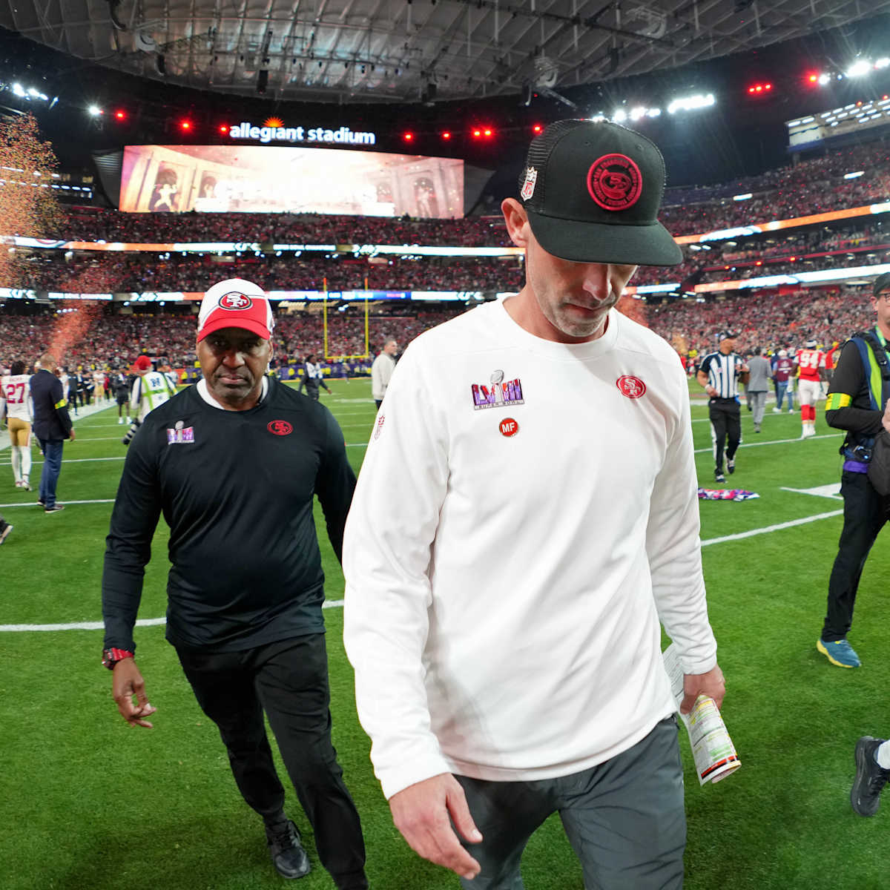

CeeDee Lamb is having a remarkable career
Dallas Cowboys Wide Receiver CeeDee Lamb has been on a meteoric rise since entering the league. Despite sharing touches with Amari Cooper, Michael Gallup, and Ezekiel Elliott, Lamb showed promise in his rookie season. He was 2nd in targets on the Cowboys per Pro Football Reference and had a high success rate vs man (73%), zone (79%), and press (80%) per Matt Harmon.
Fast forward to 2022, the Cowboys traded Cooper to the Browns in the off-season to save cap space, making Lamb a focal point for the Cowboys offense. And his production skyrocketed. In each of the last two seasons, Lamb has ranked inside the top-10 in every major WR stat such as target share, total EPA, and Yards per Route run. He continued to ascend in 2023 and finished the year 4th in target share, 1st in total EPA, and 5th in Yards per route run. Lamb gets open due to his great footwork, body control, and precise route running. His diverse route tree allows the Cowboys offense to attack all depths of the field and different types of coverages.
Trading Amari Cooper was the catalyst that pushed CeeDee Lamb into the spotlight. His knack for making big plays has been a cornerstone of the Cowboys’ offense, and his versatility is why he has become a star in the league. I will not be surprised when Lamb becomes the highest-paid WR in NFL history.
Compared to his peers, Lamar Jackson struggles when defenses bring more pass rushers
For a few years now, defenses have been able to slow down Lamar by forcing him to decide where to go with the ball with little time to read the defense. Since 2019, he ranks 29th out of 34 Quarterbacks in EPA/play on throws of less than 2.5 seconds.

Lamar struggled against heavy blitzes in 2023 compared to other elite Quarterbacks. He excelled against four or five pass rushers and ranked 7th in EPA/Play. But against six or seven pass rushers, he was 23rd in EPA/Play, a tendency the Kansas City Chiefs exploited in last year’s AFC Championship Game. On 7 heavy blitzes, Lamar completed 1 pass for 5 yards, took 1 sack, and averaged -0.65 EPA/play.
Yet, there are many reasons to be optimistic
Lamar has not had an elite offensive play-caller or a great supporting cast for most of his career. This matters because an offensive supporting cast significantly helps (hinders) the ability to beat blitzes. In the AFC Championship Game, the Ravens’ receivers struggled to get open against the Chiefs. Mark Andrews was not fully healthy, Odell Beckham Jr. was ineffective, Zay Flowers made costly mistakes, and offensive coordinator Todd Monken did not adapt his game plan and leverage the offense’s strengths.
This was Lamar’s first year in a system aimed at developing him as a passer, where he had the keys to the offense and still won MVP. Lamar also proved last year that believing in him to continue growing as a Quarterback is worthwhile. And I think there is an universe where he plays the best football of his career next year, a year where it feels it is impossible that defenses can stop him. And it is why I am very optimistic for Lamar in 2024.
Super Bowl hangover is frustrating

I do not have much to say about the painful experience of watching my team, the 49ers, lose another Super Bowl. I think Steve Young put it best when reflecting on 2023 and what the future holds for the current roster.
The most pressure was last year, right? Because last year the Rams are down, the whole division is down, Seahawks are down, Cardinals are way down,” Young said. “In the playoffs, you play a Packers team that’s been middling the whole time, you got an upstart Lions squad. And you’re like ’That’s how we get to the Super Bowl?
But next year, I think the Rams will be better, Marvin Harrison Jr. will make the Cards better, the Seahawks will be better, the Lions will be better, the Packers will be better,” Young added. “It’s going to get better and we’re probably not – I don’t know if we’ll get better but hopefully, we stay the same – and still beat the rank and file with this amazing roster we have … what just happened was a big miss. It just was. It’s too bad.
I find it difficult to be optimistic about 2024. The 49ers will have one of the oldest rosters in the league next year by average age (~27 years), and one of the most expensive (~$255M) per OverTheCap. I do not want to bet on injury luck in a good NFC. It is hard to know if and when, but I do not think the 49ers will win the Super Bowl anytime soon.